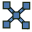

Cables SnapLines/de
|
 |
| Menüeintrag |
|---|
| Keiner |
| Arbeitsbereich |
| Cables |
| Standardtastenkürzel |
| Keiner |
| Eingeführt in Version |
| 0.3.0 |
| Siehe auch |
| Cables Installationsdose, Cables Leitungsverbindung, Cables Betriebsmittel, Cables Lichtauslass |
Beschreibung
HINWEIS: Ab Version 0.3.6 ist der Name von SuppLines auf SnapLines geändert, was nach MEINUNG des Verfassers die Funktion des Objekts besser beschreibt und sich hoffentlich besser für das Übersetzen eignet. Diese Änderung ist rückwärtskompatibel. Alle zuvor erstellten Modelle, die den alten Namen verwenden, werden weiterhin richtig funktionieren.
Die Einrastlinien, d. h. das SnapLines-Objekt, ist ein abhängiges Objekt und kann nicht direkt erstellt werden.
{kind=link}
Es kann als integriertes (untergeordnetes) Objekt während der Erstellung von Installationsdose, Leitungsverbindung, Betriebsmittel und Lichtauslass erstellt werden.
Es dient als Halterung für Leitungverläufe, die WireFlex-Objekte, die die Basis für eine Leitung bilden. Das SnapLines-Objekt selbst wird an anderen oben genannten Objekten befestigt und behält die vorgegebene Position relativ zu diesen bei. Das SnapLines-Objekt hat die Form eines Kreuzes mit fünf Knotenpunkten, die als Befestigungspunkte für bis zu fünf Leitungen dienen können, die an derselben Öffnung in eine Installationsdose eingeführt werden. Es kann auch als Bezugspunkt für eine Leitung dienen, die in einen Stecker oder ein Beriebsmittel eingeführt wird. Es liegt im Ermessen des Benutzers, ob er die Einrastlinien als hilfreich empfindet oder nicht.
Wichtig: Die tatsächliche Beziehung zwischen Einrastlinien, dem SnapLines-Objekt, und seinem übergeordneten Objekt ist umgekehrt, um zyklische Abhängigkeiten zu vermeiden und die Neuberechnung zu beschleunigen. Dies hat einige Konsequenzen (siehe Hinweise).
{kind=link}
Beispiel einer Standardform der Einrastlinien.
Anwendung
Die Einrastlinien, die SuppLines-Objekte, können nicht direkt erstellt werden. Sie werden während der Erstellung einer Installationsdose, einer Leitungsverbindung, eines Betriebsmittels oder eines Lichtauslasses entsprechend der Eigenschaft Number Of Snap Lines dieses Objekts erstellt.
Hinweise
- Das SnapLines-Objekt hat eine umgekehrte Beziehung zu seinem übergeordneten Objekt, um zyklische Abhängigkeiten zu vermeiden. Es wird in der Baumansicht (nur deshalb) als untergeordnete Elemente angezeigt, um den Zusammenhang der Objekte darzustellen. Unerwünschte Konsequenz: Wenn ein übergeordnetes Objekt kopiert wird, müssen alle seine untergeordneten Anschlusskreuze manuell mitkopiert werden.
- Abhängig vom übergeordneten Objekt, kann das einzelne SnapLines-Objekt ein oder mehrere Kreuze enthalten.
Eigenschaften
Das SnapLines-Objekt hat keine sichtbaren Eigenschaften, die bearbeitet werden können. Seine Form kann durch sein übergeordnetes Objekt erstellt und geändert werden oder die Form eines Kreuzes mit einer Standardgröße annehmen.